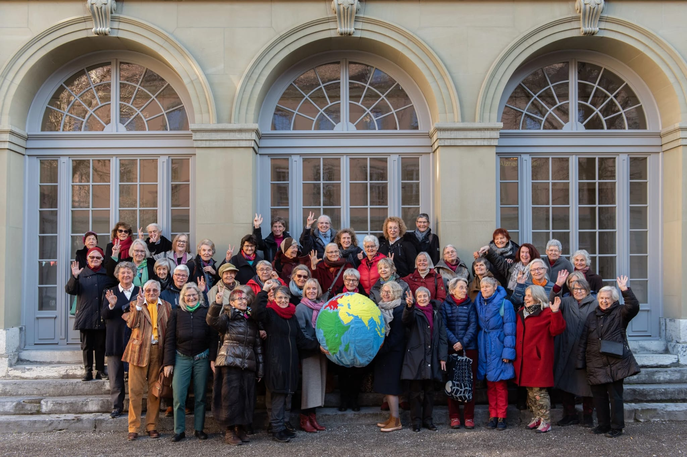

Klimaseniorinnen
Si fanno chiamare KlimaSeniorinnen, traducibile come 'donne senior per la protezione del clima', le
oltre duemila
persone, per lo più donne di età avanzata, che afferiscono alla Senior Women for Climate Protection
Switzerland. Questa
associazione elvetica ha fatto causa al proprio Paese per aver negato ai suoi cittadini il diritto
di uscire di casa e
vivere con tranquillità senza doversi tutelare dalle temperature crescenti causate dal riscaldamento
globale.
Vedendo la loro protesta formale venire rifiutata da ogni tribunale della Svizzera, queste donne, determinate a sostenere una vera e propria battaglia legale, hanno allora fatto ricorso alla Corte europea per i diritti dell'uomo (CEDU). Con sorpresa la loro denuncia è stata accolta e la Svizzera è stata accusata di non aver ottemperato alle promesse fatte per ridurre la produzione di gas serra e scongiurare l'aumento della temperatura media globale.
Ció che sembra aver convinto la Corte a deliberare a loro favore é l'effettiva oggettività del danno di salute che donne della loro fascia d'età possono testimoniare di avere subito. Infatti altre due cause analoghe e contemporanee hanno avuto un epilogo completamente differente proprio per la debolezza delle prove: l'accusa intentata da un sindaco francese al proprio Paese per non essersi adoperato a sufficienza per proteggere il suo comune da inondazioni é stata respinta al mittente poiché, essendosi lui trasferito altrove, non poteva dimostrare il danno che avrebbe subito. Mentre i giovani che hanno citato in giudizio il Portogallo per aver trascurato la qualità dell'ambiente in cui dovranno crescere hanno perso la causa poiché il tema del cambiamento climatico non é considerabile una minaccia imminente sulla loro salute ma più a lungo termine, e dunque più difficile da dimostrare.
La vittoria di queste donne ha un enorme valore simbolico, essendo la prima audizione pubblica tenuta da CEDU in relazione a una causa climatica ed essendo un potenziale precedente per una lunga serie di azioni legali con le quali i cittadini potrebbero far attuare concretamente ai governi dei propri Paesi gli accordi sottoscritti e le promesse fatte.
Ai media di tutto il mondo le donne del clima hanno dichiarato di non essere fatte per stare a casa a fare la calza, zitte, ma di sentire il bisogno di combattere questa battaglia per le nuove generazioni, i loro nipoti, visto che tra una decina di anni statisticamente la maggior parte di loro non ci sarà più.
I 46 Stati che riconoscono la CEDU dovranno ora deliberare come la Svizzera dovrà effettivamente correggere la propria politica ambientale, implementando cambiamenti concreti per garantire la riduzione di emissioni e la tutela di diritti dei suoi cittadini.
Vedendo la loro protesta formale venire rifiutata da ogni tribunale della Svizzera, queste donne, determinate a sostenere una vera e propria battaglia legale, hanno allora fatto ricorso alla Corte europea per i diritti dell'uomo (CEDU). Con sorpresa la loro denuncia è stata accolta e la Svizzera è stata accusata di non aver ottemperato alle promesse fatte per ridurre la produzione di gas serra e scongiurare l'aumento della temperatura media globale.
Ció che sembra aver convinto la Corte a deliberare a loro favore é l'effettiva oggettività del danno di salute che donne della loro fascia d'età possono testimoniare di avere subito. Infatti altre due cause analoghe e contemporanee hanno avuto un epilogo completamente differente proprio per la debolezza delle prove: l'accusa intentata da un sindaco francese al proprio Paese per non essersi adoperato a sufficienza per proteggere il suo comune da inondazioni é stata respinta al mittente poiché, essendosi lui trasferito altrove, non poteva dimostrare il danno che avrebbe subito. Mentre i giovani che hanno citato in giudizio il Portogallo per aver trascurato la qualità dell'ambiente in cui dovranno crescere hanno perso la causa poiché il tema del cambiamento climatico non é considerabile una minaccia imminente sulla loro salute ma più a lungo termine, e dunque più difficile da dimostrare.
La vittoria di queste donne ha un enorme valore simbolico, essendo la prima audizione pubblica tenuta da CEDU in relazione a una causa climatica ed essendo un potenziale precedente per una lunga serie di azioni legali con le quali i cittadini potrebbero far attuare concretamente ai governi dei propri Paesi gli accordi sottoscritti e le promesse fatte.
Ai media di tutto il mondo le donne del clima hanno dichiarato di non essere fatte per stare a casa a fare la calza, zitte, ma di sentire il bisogno di combattere questa battaglia per le nuove generazioni, i loro nipoti, visto che tra una decina di anni statisticamente la maggior parte di loro non ci sarà più.
I 46 Stati che riconoscono la CEDU dovranno ora deliberare come la Svizzera dovrà effettivamente correggere la propria politica ambientale, implementando cambiamenti concreti per garantire la riduzione di emissioni e la tutela di diritti dei suoi cittadini.